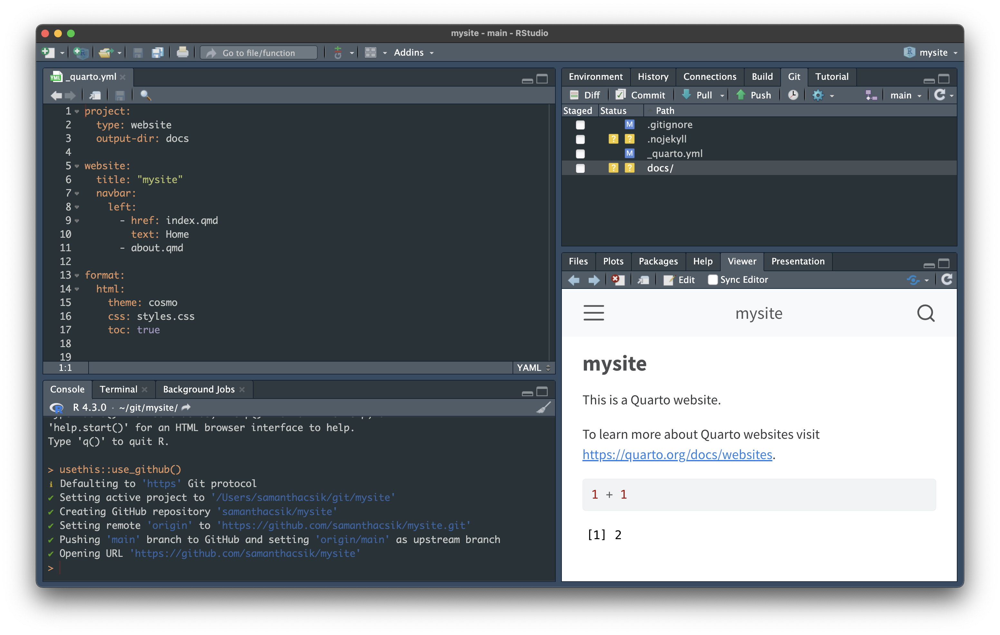

Creating your personal website using Quarto
What is  ?
?
Quarto is a publishing system built on Pandoc that allows users to create dynamic content using R, Python, Julia, and ObservableJS (with plans to add more languages too!).
R users have long loved RMarkdown for combining prose, code, and outputs into single “knitted” documents. Quarto extends all of RMarkdown’s best features (plus many more!) to additional languages.
Art by Allison Horst. Be sure to check out the rest of Allison’s seriously cute Quarto penguin art in the #rstudioconf2022 keynote talk, Hello Quarto, by Julie Lowndes & Mine Çetinkaya-Rundel!
You can explore Quarto’s documentation to learn more about creating documents, websites, blogs, books, slides, etc.
I’m new to Quarto (like many of us!) – if you have suggestions on how to correct or improve these instructions, please feel free to file an issue on GitHub.
Do I need to use Quarto to build my website?
Nope! There are a number of R-based tools that make building websites and blogs fun and easy, including the still-widely-used {blogdown} and {distill} packages.

Alternatively, you can skip R altogether and build really beautiful sites using HTML templates (check out this tutorial by NCEAS’ Science Communication and Policy Officer, Alex Phillips) or a variety of static site generators (e.g. Hugo, Jekyll).
Though still relatively new, Quarto has the data science community (particularly on Twitter) abuzz – it’s versatile, user-friendly, and looks pretty great out-of-the-box (while still being customizable).
Twitter is a great place to stay atop Quarto (and all-things #rstats) news.
Follow @quarto_pub and check out Mine Çentinkaya-Rundel’s #quartotip tweets, which are collected and published as blog posts at the A Quarto tip a day keeps the docs away website.
Create the scaffolding for your website
Before getting started…
To follow along, you’ll need:
- R & RStudio installed (find the latest RStudio release here)
- Quarto installed – Quarto is now included with RStudio v2022.07.1+ i.e. no need for a separate download/install if you have the latest version of RStudio
- A GitHub account & your personal access token (PAT) stored
- Git installed/configured
Please refer to the MEDS Installation Guide for Mac and Windows machines for detailed instructions (follow steps 1-7).
This document reviews two ways to get started with using Quarto to build your website.
- Through the command line
- Using the RStudio IDE
The order of operations is slightly different depending on which approach you decide to take, but the concepts remain the same.
Why use the command line to set up your Quarto website?
You’ll start to get more comfortable working in a command line interface (CLI)
You’re able to interact with Quarto via the command line regardless of which language (R, Python, Julia, ObservableJS) or IDE (Integrated Development Environment) you might find yourself working with
Steps:
Open up your terminal.
Determine where you are in your file system using
pwd(print working directory). Usecd(change directory) to navigate your file system to wherever you’d like your project to live.
Tip
There are lots of differing opinions on how to keep your R projects/git repositories organized on your computer. I personally save all of mine to a folder called git in my computer’s home directory (e.g. Users/samanthacsik/git/) so everything is in one place.
- Use the following commands to create a quarto website project directory that contains the files necessary for building your website:
quarto create-project mysite --type website Throughout this document, we’ll use the words directory and folder interchangeably.
- Recommended: Because we’ll be using GitHub pages to publish/host our websites, it’s recommended that you name your project yourusername.github.io (you’re allowed one user website with the github.io suffix) – for example, my personal website that is hosted via GitHub pages is named samanthacsik.github.io. Otherwise, name it something reasonable (this will become the slug for your site if publishing with GitHub pages, so choose carefully). I’m calling my project mysite just for tutorial purposes only – you should definitely give yours a more practical/creative name.

pwd to see your current working directory. Use cd to change directories.
quarto create-project your_project_name --type website commands.- If you
cdinto your newmysitedirectory (or whatever you named your quarto project), and use thelscommand to list out all the contents of that directory, you should see a series of files (_quarto.yml,about.qmd,index.qmd,styles.css) that provide the scaffolding for your website. For example:
# print current working directory
(base) Samanthas-MacBook-Air:git samanthacsik$ pwd
/Users/samanthacsik/git
# move into `mysite` directory
(base) Samanthas-MacBook-Air:git samanthacsik$ cd mysite/
(base) Samanthas-MacBook-Air:mysite samanthacsik$
# list out all files in the `mysite` directory
(base) Samanthas-MacBook-Air:mysite samanthacsik$ ls
_quarto.yml _site about.qmd index.qmd styles.css- Alternatively, you can use Finder (Mac) or Windows Explorer (Windows) to view your new directory and files.

- You can preview your very basic, but functional website straight from the terminal by typing:
quarto preview mysite- Your site preview should open up in your browser. Quit your preview by pressing
control+C
Important
You will need to supply the path to your website directory when previewing from a different location. For example, if my Quarto website directory is at User/samanthacsik/git/mysite, but I am one directory above in User/samanthacsik/git, I can run quarto preview mysite. Alternatively I could provide the full path quarto preview User/samanthacsik/git/mysite or relative path quarto preview ~/git/mysite, no matter which directory I am currently in.
- At this point you’ve created a directory (folder) but it’s not yet being tracked by git. First be sure to
cdinto your website folder. Then, initialize this folder as a git repository using thegit initcommand in the terminal window.
git initgit status is a super useful command which displays the state of your working directory and staging area. I use this command often when working on the command line to double check that I’m actually where I think I am, and to see tracked files and untracked or changed files. It’s a good habit run git status after switching branches or before/after adding files to commit.
- Next, let’s check the name of our default branch – that is, the branch that all changes eventually get merged back into (if you’re building a website, this branch is typically the one you’ll want to deploy). In your Terminal window, type
git status. You should see something that looks like this, where the first line tells you which branch you’re currently on:
(base) Samanthas-MacBook-Air:mysite samanthacsik$ git status
On branch master
No commits yet
Untracked files:
(use "git add <file>..." to include in what will be committed)
.quarto/
_quarto.yml
_site/
about.qmd
index.qmd
styles.css
nothing added to commit but untracked files present (use "git add" to track)- If your current branch is named
master, follow step 7 below to update the name tomain. Why? The racist “master” terminology for git branches motivates us to update our default branch to “main” instead. If your branch is already namedmain, you can head straight to step 8.
Note: If you create a repo in GitHub first, the default now has been updated to make the default branch main. However, if you create a local git repository first (as we’ve done here) you may need to update your default branch name to main (depending on your version of Git and its configuration settings).
- Let’s switch our default branch name from
mastertomain. Choose your workflow below based on your Git version (check your version by runninggit --versionin your Terminal):
You can update the default branch to main by running the following line in the Terminal window:
git config --global init.defaultBranch mainThis sets the default branch name to main for any new repositories you create moving forward (it does not rename branches in existing projects).
You can double check that this worked by typing out the git status command again. The first printed line should now read, On branch main.
Important
Be mindful that your workflow for updating master to main will look different if you’ve already created both a local git repo (first) AND an upstream remote i.e. GitHub repo (second). Check out this post for more info.
Rename the default branch as main by running the following line in the Terminal window:
git branch -m master mainThe -m attribute is used to rename the branch without affecting the branch’s history.
This sets the default branch name to main ONLY for this repository (so you’ll need to do this with any new local git repositories that you create.
You can double check that this worked by typing out the git status command again. The first printed line should now read, On branch main.
Important
Be mindful that your workflow for updating master to main will look different if you’ve already created both a local git repo (first) AND an upstream remote i.e. GitHub repo (second). Check out this post for more info.
- Add the files in your
mysitedirectory (analogous to checking the boxes next to your files in the RStudio Git tab)…
# this adds all untracked or changed files at once
git add .
# alternatively, you can add files individually
git add <file_name>
Tip
Use the git status command again to see if your files have been successfully added before committing them – any untracked or changed files that were once printed in red should now appear in green.
…and commit them (analogous to pressing the “Commit” button in RStudio and typing your commit message into the popup window):
git commit -m "initial commit"- At this point, you’ve created a local Git repository that contains the basic files needed to build your Quarto website. Now, we need to create a “remote” repository (i.e. a version of your project that is hosted on the Internet) on GitHub. There are multiple ways to do this, but we’ll cover the workflow that makes most intuitive sense to me. Open up/log in to GitHub and create a new repository.
Git vs. Github: Git is a version control system that allows you to manage and track your file version control history while GitHub is a cloud-based hosting service that allows you to manage Git repositories. As Jenny Bryan describes in her book Happy Git and GitHub for the useR, hosting services like GitHub “provide a home for your Git-based projects on the internet.” These services not only help to facilitate collaboration, but they also protect you in the event your computer suddenly dies – just “clone” your GitHub repository back onto your new computer and voila! You’re able to pick right back up where you left off.
Do not initialize with a README, license, or
.gitignore files!
Avoid doing this when you create your new GitHub repo to avoid errors. You can add these after your project as been pushed.
- Copy the remote repository URL (found at the top of the Quick Setup Page) to your clipboard.

- In Terminal, add the URL for the remote repository where your local repository will be pushed:
# set the new remote using your GitHub repo URL
git remote add origin <REMOTE_URL>
# verify the new remote URL is correct (this just prints out the URL you added)
git remote -v- Push the changes in your local repository to your remote repository on GitHub:
git push -u origin main- You should see something similar to this print out, if successful!
(base) Samanthas-MacBook-Air:mysite samanthacsik$ git push -u origin main
Enumerating objects: 33, done.
Counting objects: 100% (33/33), done.
Delta compression using up to 8 threads
Compressing objects: 100% (29/29), done.
Writing objects: 100% (33/33), 273.20 KiB | 13.66 MiB/s, done.
Total 33 (delta 1), reused 0 (delta 0), pack-reused 0
remote: Resolving deltas: 100% (1/1), done.
To https://github.com/samanthacsik/mysite.git
* [new branch] main -> main
Branch 'main' set up to track remote branch 'main' from 'origin'.
(base) Samanthas-MacBook-Air:mysite samanthacsik$ - Refresh your GitHub repository (in your web browser) to see that your updates have been successfully pushed!
Create a Quarto website inside an existing GitHub repository
The above instructions follow the “create local R project (and initialize as a git repo) first > create upstream remote repo (on GitHub) second” workflow. However, if you already have a remote GitHub repository that you want to use for your website, clone the GitHub repo, then run the following command in your terminal:
quarto create-project --type websiteThis adds the the default files (_quarto.yml, .gitignore, index.qmd, about.qmd, styles.css) for getting started on your website.
You may also use this approach if you already have an existing local directory of documents or R project that you’d like to use as the directory for your website. First, navigate to that direcotory/open that R project, then run the above command in your terminal.
Why use RStudio to set up your Quarto website?
- It’s super easy to do with the click of just a few buttons! Remember, the commands we type out in our terminal window underlie the buttons we’re clicking on in the RStudio IDE – RStudio simply provides a user-friendly interface for executing those commands.
Steps:
- Open up RStudio and click on the
 button in the top right corner. Select New Project…
button in the top right corner. Select New Project…

- Click on New Directory, then Quarto Website

- Fill out the Directory name: field (this is the name of your R project, and eventually, your GitHub repo name), choose where to save your directory using the Browse button. Click Create Project.
Tip
There are lots of differing opinions on how to keep your R projects/git repositories organized on your computer. I personally save all of mine to a folder called git in my computer’s home directory (e.g. Users/samanthacsik/git/) so everything is in one place.
- Recommended: Because we’ll be using GitHub pages to publish/host our websites, it’s recommended that you name your project yourusername.github.io (you’re allowed one user website with the github.io suffix) – for example, my personal website that is hosted via GitHub pages is named samanthacsik.github.io. Otherwise, name it something reasonable (this will become the slug for your site if publishing with GitHub pages, so choose carefully). I’m calling my project mysite just for tutorial purposes only – you should definitely give yours a more practical/creative name.

- You should now see a folder called
mysite(or whatever you named your Quarto project) with a series of files (_quarto.yml,about.qmd,index.qmd,styles.css) that provide the scaffolding for your website in the Files tab (in the bottom right panel in RStudio, if you haven’t altered the pane layout).
- At this point you’ve created a directory (folder) with the website scaffolding files, but it’s not yet being tracked by git, nor is it connected to a remote repository on GitHub. To start setting this up, first install the
{usethis}package if you don’t already have it.
install.packages("usethis")- In the Console (while in your website project in RStudio), run
usethis::use_git()to create a local git repo. Choose yes when asked if it’s okay to commit any uncommitted files. If asked to restart R, choose yes. Once complete, you should see the Git tab appear in your top left pane in RStudio.

Note
We’re using the {usethis} workflow here because it’s a super useful package to begin learning for project setup. However, rather than using the usethis::use_git() function here to create your local git repo, you could have also checked the box where it says Create a git repository when initially setting up your Quarto website (see step 3 above).
- Then, in the Console, run
usethis::use_github()to create an upstream remote repository (i.e. GitHub repo). Your web browser should open up to your new GitHub repository, with the same name as your local git repo/R project.
Git vs. Github: Git is a version control system that allows you to manage and track your file version control history while GitHub is a cloud-based hosting service that allows you to manage Git repositories. As Jenny Bryan describes in her book Happy Git and GitHub for the useR, hosting services like GitHub “provide a home for your Git-based projects on the internet.” These services not only help to facilitate collaboration, but they also protect you in the event your computer suddenly dies – just “clone” your GitHub repository back onto your new computer and voila! You’re able to pick right back up where you left off.

usethis::use_github() your browser window should open up to your new GitHub repository and look similar to the browser above.Next, let’s check the name of our default branch – that is, the branch that all changes eventually get merged back into (if you’re building a website, this branch is typically the one you’ll want to deploy). There are multiple ways to check this – here are two easy options:
open your Terminal window from RStudio and type
git status– the first printed line should sayOn branch <branch_name>.click on the Git tab in the top right pane of RStudio. Next to the
 symbol, you should see a dropdown menu that displays the name of your current branch.
symbol, you should see a dropdown menu that displays the name of your current branch.
- If your current branch is named
master, follow step 8 below. Why? The racist “master” terminology for git branches motivates us to update our default branch to “main” instead. If your branch is namedmain, you’re good to go! You can continue to the next section, Publish your site with GitHub Pages.
Note: If you create a repo in GitHub first, the default now has been updated to make the default branch main. However, if you create a local git repository first (as we’ve done here) you may need to update your default branch name to main (depending on your version of Git and its configuration settings).
- Let’s switch our default branch name from
mastertomain. In the console, runusethis::git_default_branch_rename(from = "master", to = "main")to update your default branch name. Confirm that it updated (a) locally by runninggit statusagain in your Terminal – the first printed line should now read,On branch main, and (b) on your remote by refreshing your GitHub repo (in your web browser) – you should see the updated default branch name at the top of your repo.
Create a Quarto website inside an existing GitHub repository
The above instructions follow the “create local R project (and initialize as a git repo) first > create upstream remote repo (on GitHub) second” workflow. However, if you already have a remote GitHub repository that you want to use for your website, clone the GitHub repo, then run the following command in your terminal:
quarto create-project --type websiteThis adds the the default files (_quarto.yml, .gitignore, index.qmd, about.qmd, styles.css) for getting started on your website.
You may also use this approach if you already have an existing local directory of documents or R project that you’d like to use as the directory for your website. First, navigate to that direcotory/open that R project, then run the above command in your terminal.
Publish your site with GitHub Pages
There are a lots of options to publish your website. We’ll use the GitHub Pages option, which allows you to publish a website from any GitHub repository. To do so, there are a few configuration steps:
- Create a file named
.nojekyllin your repository, which is required to disable some processing of HTML files that GitHub does by default. Do this from your terminal (you can use the terminal tab in RStudio or a separate terminal window – just make sure you’re in the correct directory) using the following command:
touch .nojekyll
Note
The touch command creates a new, empty file.
.nojekyll is a hidden file which won’t visibly appear in your directory. You should see it show up as a file to track with git under the Git tab in RStudio. You can also view hidden files in Finder (Mac) using the keyboard shortcut Command + Shift + ., or follow these instructions for Windows 10, 8.1, and 7.
- Set the
output-dirin your_quarto.ymlfile to “docs” (it’s easiest to do this from RStudio):
project:
type: website
output-dir: docs- Build your site by clicking on the Build tab (top left quadrant in RStudio), then Render Website. You should see a minimal, albeit functional, soon-to-be website appear in the Viewer tab. Click on the
 button to open your file in your web browser. Note: your website is currently being hosted by your local machine, not at a searchable URL. We’ll get there soon though!
button to open your file in your web browser. Note: your website is currently being hosted by your local machine, not at a searchable URL. We’ll get there soon though!

Now we need to send all of the files in our local git repository to our remote GitHub repository:
- Stage your files by checking all the boxes in the Git tab (this is analogous to the
git add .command used in the Terminal for staging all files) - Commit your files by clicking the Commit button, adding a commit message, and clicking “Commit” (analogous to
git commit -m "my commit message") - Push your files to the remote repository (on GitHub) by clicking the “Push” button with the green upward facing arrow (analogous to
git push).
- Stage your files by checking all the boxes in the Git tab (this is analogous to the
Configure GitHub pages to serve content from the “docs” directory by clicking on the Settings tab in the top menu bar, then Pages tab from the left hand menu bar. Make sure that Branch is set to
mainand that the selected folder is set to/docs. Click “Save”. Your website’s URL will appear inside a blue banner at the top of the page. Give it a few minutes to render (you’ll get a 404 error message if it’s not ready yet), then explore your site!


Where you should start changing stuff
Right now, our website is built using Quarto default styling. Let’s learn about where things live and how to start customizing some stuff.
Don’t mess with stuff in
/docs. When you Render your site (by clicking Build > Render Website), Quarto takes all your.qmdfiles, converts them to.htmlfiles (along with some other important stuff) and saves everything to your/docsfolder. Your site now deploys from this folder, so you really don’t want to mess with anything in here directly.Add content to your landing page (
index.qmd). Give your landing/home page a makeover by trying out some of the following:Update the yaml
titlein yourindex.qmdfile. Here, I changed mine from “mysite” to my name, “Samantha Csik”Delete the sample text and code and begin adding your own content – a great place to start is a short blurb introducing yourself! (Note: using three dashes,
---, creates a page divider, as seen in the screenshot below)
Turn your landing page (
index.qmd) into an “About Page” with a photo. When theaboutoption is added to a document’s yaml, a special template will be used to layout the content of that page. Choose from one of Quarto’s five built-in templates, each with a slightly different layout style. Some yaml options to play around with:template: choose from Quarto’s built-in template optionsimage(note that this is a document-level option): supply it the file path to your photoimage-width&image-shape: adjust your image’s size and shape (round,rounded,rectangle)links: add buttons with links to your social media pages
title: "Samantha Csik"
image: headshot.jpg
about:
template: trestles
image-shape: rounded
image-width: 15em
links:
- text: LinkedIn
href: https://www.linkedin.com/in/samanthacsik/
- text: Twitter
href: https://twitter.com/SamanthaCsik
- text: GitHub
href: https://github.com/samanthacsik
- text: Email
href: mailto:scsik@ucsb.eduFun Tip: Install the Font Awesome Extension for Quarto to add free Font Awesome icons to your site! Be sure to check out the icon option when adding linked buttons to your About Page.

trestles template, adding an image, links, and some content. Note: You can also update the text that appears in the top left corner by editing the “title” option in your _quarto.yml file.Add additional pages to your website. In the default Quarto website skeleton, there are two items in the navbar that appear as “Home” and “About” (Note: don’t confuse the special-formatted “About Page” we created in
index.qmdwith the navbar page currently titled “About”). Those navbar tabs link to two.htmlfiles (index.htmlandabout.html) and are automatically rendered when when you Build to/docs(i.e. you don’t need to knit them manually to create the html). Adding a new page to your website requires two steps:a. Create a new
.qmdfile (New File > Quarto Document and save it to your project’s root directory) and add any content that you want to appear on that page. Here, I’m creating a new page called “All of my favorite resources!” and saved it to my root directory asresources.qmd.b. Update
_quarto.ymlby adding your new.qmdto the list of navbar pages. My website’s_quarto.ymlfile now looks like this:
project:
type: website
output-dir: docs
website:
title: "Samantha Csik"
navbar:
background: primary
left:
- href: index.qmd
text: Home
- about.qmd
- resources.qmd # my new navbar page
format:
html:
theme: cosmo
css: styles.css
editor: visual- Change the theme by choosing one of the 25 predefined Bootswatch themes. By default, Quarto sites are built using the cosmo theme. Supply just one theme name to the
themeoption in your_quarto.qmdfile, or supply both a dark and a light theme for users to toggle between:
# supplying just one theme ("minty")
format:
html:
theme: minty
css: styles.css# supplying a light ("minty") and dark ("slate") theme to toggle between
format:
html:
theme:
light: minty
dark: slate
css: styles.css
light theme, which is set to the minty, a prebuilt Bootswatch theme
dark theme, which is set to slate, a prebuilt Bootswatch theme
Always “Render Website” before pushing changes that you want to deploy!
You must Render Website (under the Build tab) before pushing added/changed files to GitHub if you want to see those changes updated on your site. Rendering individual files alone will not work.
Looking forward
You should now have a basic version of your website up and running 🎉 During Fall quarter, we’ll learn how to:
a. customize the appearance of our site using Sass & CSS
b. add a blog and blog posts to our websites
c. continue developing your online “brand”
In the meantime, explore some alumni websites (last year’s students used the {distill} package to build their websites) for inspiration, or dig into the Quarto Website documentation if you’re hoping to get started now on further customization.
Additional resources to get you stoked about Quarto
We don’t talk about Quarto, by Alison Hill | blog post
Reproducible Authoring with Quarto, by Mine Çetinkaya-Rundel | slides | recording
Hello Quarto! A Chat with NASA Openscapes, Co-Hosted with R-Ladies Santa Barbara | blog post | recording
rstudio::conf 2022 keynote, Hello Quarto, by Julie Lowndes and Mine Çetinkaya-Rundel | recording
Acknowledgements
Lots of wonderful content and tips included here were borrowed/adapted from Allison Horst’s workshop, Getting started with distill sites – check it out if you’re looking to go the {distill} route! Many thanks to Jim Gardner, who provided super helpful feedback on the flexibility of Quarto’s command line tools. And of course, much gratitude for all those who’ve shared both these materials with colleagues, online, etc. – it’s been amazing to receive so many shout outs as folks share their fresh new Quarto sites .